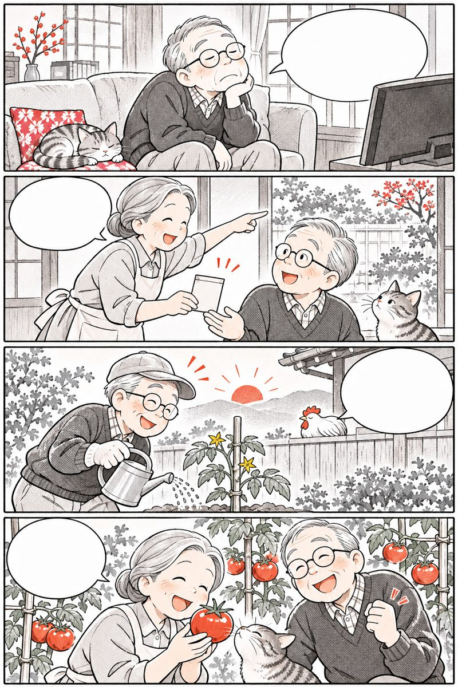
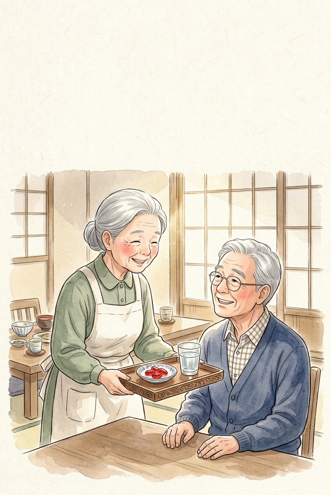
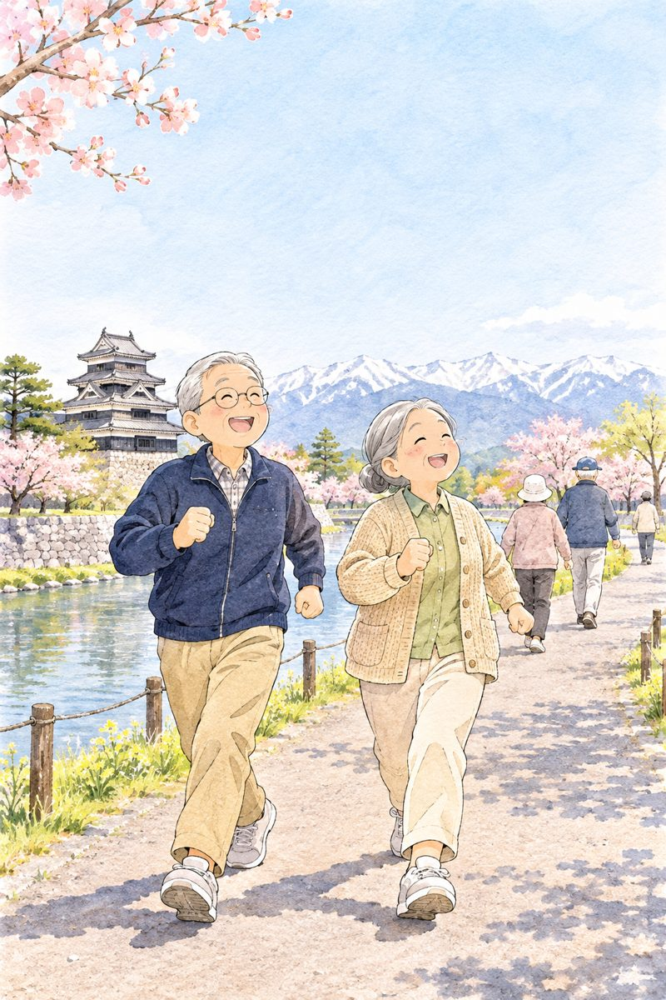

Tắm ấmngâm chân, ngủ sâu kiểu Nhật
Nghệ thuật tắm ấm Ofuro 40°C và ngâm chân Ashiyu buổi tối giúp người Nhật giãn mạch êm dịu, phòng sốc nhiệt và ngủ ngon tới sáng.
Mục lục
Bấm vào chương để đọc.

Ngâm nước ấm
dưỡng mạch đêm
Nghi thức Ofuro 40°C của người Nhật
yoru no ofuro to ashiyu
Với người Nhật, bước vào làn nước ấm 40°C buổi tối không chỉ để sạch người mà là khoảnh khắc cởi bỏ mỏi mệt và vỗ về toàn bộ hệ mạch máu.
Những con số từ thói quen tắm ấm Nhật
nguy cơ bệnh tim mạch ở người tắm nước ấm hằng ngày so với chỉ tắm 1–2 lần/tuần (JPHC Study)
nguy cơ đột quỵ nhờ mạch máu ngoại vi giãn nở êm dịu và huyết áp tối ổn định hơn
nhiệt độ nước ấm lý tưởng (39–40°C) kích thích thần kinh phó giao cảm thư giãn
khoảng thời gian để thân nhiệt lõi dịu xuống tự nhiên, mở cánh cửa vào giấc ngủ sâu

Nghiên cứu theo dõi 30.000 người Nhật suốt 20 năm chứng minh tắm ấm đúng cách là “bài tập dưỡng mạch” êm ái nhất!
Nguồn: Ukai T. et al., Heart (BMJ, 2020) — Japan Public Health Center-based Study Cohort I.
Chậu nước ấm 40°C đổi lấy giấc ngủ trọn đêm
 Đêm nào hai bàn chân cũng lạnh, khó ngủ quá!
Mình ngâm ấm 40°C trước giờ ngủ 90 phút nhé!
Máu lưu thông ấm từ bàn chân lên tận vai!
Đặt lưng xuống là ngủ êm một mạch tới sáng!
Đêm nào hai bàn chân cũng lạnh, khó ngủ quá!
Mình ngâm ấm 40°C trước giờ ngủ 90 phút nhé!
Máu lưu thông ấm từ bàn chân lên tận vai!
Đặt lưng xuống là ngủ êm một mạch tới sáng!
Khi đôi bàn chân ấm áp, mạch máu giãn nở nhẹ nhàng và bộ não tự động nhận tín hiệu nghỉ ngơi.
Vì sao nước ấm 40°C lại mở khóa giấc ngủ sâu?
Giáo sư Nishino Seiji (Phòng thí nghiệm Giấc ngủ Stanford) giải thích cơ chế “Công tắc hạ thân nhiệt lõi” khi tắm ấm:
 Lạnh chân: co mạch, khó ngủ
Ấm 40°C: giãn mạch, ngủ sâu
Lạnh chân: co mạch, khó ngủ
Ấm 40°C: giãn mạch, ngủ sâu
- Kích hoạt Nitric Oxide (NO) nội mô: hơi ấm 40°C làm dòng máu chảy êm qua mao mạch, thúc đẩy tế bào nội mô tiết NO giúp thành mạch mềm mại.
- Nhịp lượn sóng thân nhiệt: ngâm ấm làm thân nhiệt tăng nhẹ ~0,5°C; trong 90 phút sau đó, nhiệt tỏa ra qua lòng bàn tay, bàn chân làm thân nhiệt lõi hạ xuống — đưa não vào giấc ngủ sóng chậm sâu nhất.
Nguồn: Nishino S., The Stanford Method for Ultimate Sound Sleep; Hatanaka M., J. Physiol. Anthropol.
Nước càng nóng già thì càng tốt cho mạch máu?

Nhiều cô chú thích pha nước thật nóng (43–45°C) hoặc tắm sát giờ lên giường. Hãy tránh 4 hiểu lầm này:
Pha nước thật nóng 43–45°C cho đã mỏi
Nước trên 42°C kích thích thần kinh giao cảm làm tăng vọt huyết áp; chỉ nên pha 39–40°C
Tắm nước ấm ngay lúc 22h–23h khuya
Tắm hoặc ngâm chân sớm (19h30–20h30), trước khi đi ngủ 90 phút
Ngâm mình càng lâu (30–40 phút) càng khỏe
Chỉ ngâm bồn 10 phút (hoặc ngâm chân 15 phút) để không làm tim mệt và mất nước
Nhà không có bồn tắm thì chịu
Ngâm hai bàn chân ngập mắt cá (Ashiyu) 15 phút cho hiệu quả giãn mạch tương đương
Nguồn: Hiệp hội Y học Balneology và Khí hậu học Nhật Bản.
Tự rà 9 dấu hiệu nhiễm lạnh & khó ngủ

Bấm vào những câu đúng với bố mẹ hoặc chính mình vào buổi tối:
Từ 2 dấu hiệu trở lên là lời nhắc nên áp dụng nghi thức tắm ấm / ngâm chân 40°C trước giờ ngủ 90 phút.

Công thức vàng
40°C · 10 phút
Nghi thức tắm ấm dưỡng thần kinh phó giao cảm
yonjūdo jippun nyūyoku
Chỉ lệch 2 độ C cũng quyết định việc nước tắm giúp bạn ngủ sâu hay làm tim đập nhanh, trằn trọc cả đêm.
3 con số vàng Bác sĩ Nhật khuyên tuổi 50+
Giáo sư Hayasaka Shinya (Đại học Thành phố Tokyo — chuyên gia hàng đầu Nhật Bản từng nghiên cứu hơn 38.000 người tắm) đúc kết 3 nguyên tắc vàng:
- 40°C
Nhiệt độ nước 39–40°C (sờ tay thấy ấm dịu, không rát đỏ da) giúp bật công tắc thần kinh phó giao cảm, làm nhịp tim chậm lại và hạ huyết áp êm.
- 10 phút
Ngâm bồn ngang ngực – vai không quá 10 phút (nếu ngâm chân chậu cao thì 15 phút) là vừa đủ để làm ấm máu mà không gây mệt tim.
- 90 phút
Hoàn tất việc tắm ấm / ngâm chân trước giờ đi ngủ 90 phút để thân nhiệt lõi kịp hạ xuống đúng lúc đặt lưng lên giường.

Khi trán bắt đầu lấm tấm mồ hôi nhẹ là dấu hiệu cơ thể đã đủ ấm — hãy bước ra lau khô ngay nhé!
Nguồn: GS. Hayasaka Shinya, Đại học Thành phố Tokyo — Cẩm nang Tắm ấm chuẩn Y khoa Nhật Bản.
Bí quyết dội ấm từ bàn chân ngược lên
 Vào phòng tắm là ông dội lên vai luôn!
Ấy đừng! Phải dội ấm từ bàn chân trước!
Gọi là Kakeyu — để mạch máu quen nhiệt!
Êm ái quá, huyết áp chẳng bị giật mình!
Vào phòng tắm là ông dội lên vai luôn!
Ấy đừng! Phải dội ấm từ bàn chân trước!
Gọi là Kakeyu — để mạch máu quen nhiệt!
Êm ái quá, huyết áp chẳng bị giật mình!
Nghi thức dội nước ấm từ bàn chân lên đùi, bụng rồi mới tới vai (Kakeyu · かけ湯) giúp báo trước cho trái tim.
Phòng tránh “Sốc nhiệt nhà tắm” (Heat Shock)
Tại Nhật Bản, biến cố huyết áp trong phòng tắm mùa lạnh thường xảy ra do mạch máu co – giãn đột ngột khi chênh nhiệt độ trên 5°C:
 Phòng lạnh + Nước quá nóng: huyết áp vọt rồi tụt
Làm ấm phòng + Nước 40°C: mạch máu êm dịu
Phòng lạnh + Nước quá nóng: huyết áp vọt rồi tụt
Làm ấm phòng + Nước 40°C: mạch máu êm dịu
- Làm ấm phòng tắm trước 2 phút: mở vòi sen nước ấm xả vào sàn/tường phòng tắm cho hơi ấm lan tỏa trước khi cởi áo.
- Đứng dậy thật từ từ: khi đang ngâm ấm, áp lực nước đẩy máu về tim; lúc bước ra cần vịn tay đứng dậy chậm rãi 5 giây để không bị hoa mắt chóng mặt.
Nguồn: Ủy ban An toàn Tắm ấm cho Người cao tuổi — Bộ Y tế, Lao động và Phúc lợi Nhật Bản (MHLW).

Vừa ăn tối no xong đã đi tắm ngay cho rảnh?
Thời điểm tắm quan trọng không kém nhiệt độ nước đối với tiêu hóa và tuần hoàn:
Thói quen gây hại
- Tắm ngay khi vừa ăn no làm máu dồn ra da, thiếu máu tiêu hóa
- Tắm ngay sau khi uống rượu bia dễ gây tụt huyết áp
- Bước từ phòng tắm ra ngồi thẳng trước quạt gió/điều hòa lạnh
Chuẩn an toàn Nhật
- Tắm sau bữa ăn tối ít nhất 45–60 phút
- Tuyệt đối không tắm bồn khi vừa uống rượu bia
- Lau khô người, mặc áo ấm và đi tất mỏng giữ ấm cổ chân
4 bước tắm ấm an toàn cho tuổi 50+
Thực hiện đúng thứ tự 4 bước giúp mạch máu êm dịu từ đầu đến cuối:
Uống 150–200 ml nước ấm 15 phút trước khi tắm để bù dịch, giữ máu loãng
Xả vòi sen ấm làm ấm phòng tắm, rồi dội từ bàn chân → bắp chân → đùi → vai
Ngâm bồn ngang ngực 10 phút hoặc ngâm chân ngập mắt cá 15 phút
Đứng dậy từ từ, lau khô ngay, giữ ấm cổ chân và nghỉ ngơi
Làm ngay
- Đặt ghế nhựa chống trượt trong phòng tắm cho ông bà ngồi
- Báo người nhà biết trước khi vào tắm buổi tối
Đừng làm
- Dội nước ngay từ đỉnh đầu xuống khi người đang lạnh
- Chốt chặt cửa phòng tắm từ bên trong đối với người cao tuổi
Nguồn: Hướng dẫn Phòng chống Sốc nhiệt Mùa đông — Hiệp hội Tim mạch Nhật Bản.
Kiểm tra thói quen Tắm ấm & Ngâm chân
Duy trì ngâm ấm 5–7 tối mỗi tuần giúp giảm 28% nguy cơ biến cố tim mạch theo nghiên cứu JPHC Nhật Bản.

Ngâm chân ấm
sưởi trái tim
Liệu pháp Ashiyu (足湯) cho mọi gia đình Việt
ashiyu de zenshin pokapoka
Y học phương Đông và Nhật Bản gọi đôi bàn chân và bắp chân là “trái tim thứ hai” — làm ấm đôi chân 15 phút là làm ấm cả cơ thể.
Vì sao “Ashiyu” hợp nhất với nhà người Việt?
- Không gây áp lực thủy tĩnh lên tim phổi
Người cao tuổi có bệnh tim mạch hoặc huyết áp đôi khi ngại ngâm bồn sâu; ngâm chân Ashiyu hoàn toàn nhẹ nhàng cho lồng ngực.
- Ngập qua mắt cá chân 5–10 cm
Mực nước ngập qua mắt cá giúp làm ấm mạng tĩnh mạch cổ chân và huyệt Tam Âm Giao, giảm hẳn chứng chuột rút và tiểu đêm.
- Thêm vài lát gừng tươi đập dập
Tinh chất Gingerol trong gừng ấm kết hợp chút muối hạt giúp giữ ấm gan bàn chân suốt cả đêm.
Chỉ cần 1 chiếc chậu nhựa sâu lòng hoặc chậu gỗ ngay tại phòng khách, cả hai ông bà vừa ngâm chân vừa trò chuyện thật vui!
Nguồn: Liao W. C. et al., International Journal of Nursing Studies — Warm footbath and sleep quality in older adults.
Chậu nước gừng ấm bên ghế sofa mỗi tối

Tối nay mưa lạnh, mình ngâm chân Ashiyu nhé! Thêm 3 lát gừng tươi, nước ngập mắt cá chân! Ngâm 15 phút mà ấm lan lên tận bả vai! Lau khô, bấm huyệt Dũng Tuyền, ngủ ngon lành!Mười lăm phút ngâm chân nước gừng ấm mỗi tối là món quà hiếu thảo giản dị nhất con cháu có thể chuẩn bị cho ông bà.
Huyệt Dũng Tuyền & Tam Âm Giao ấm lên
Đôi bàn chân nằm xa trái tim nhất nên máu rất dễ ứ trệ và lạnh đi vào buổi tối:
 Ngập trên mắt cá 5 cm: ấm Tam Âm Giao
Day gan bàn chân: ấm huyệt Dũng Tuyền
Ngập trên mắt cá 5 cm: ấm Tam Âm Giao
Day gan bàn chân: ấm huyệt Dũng Tuyền
- Mở cổng tản nhiệt sinh học (AVA): lòng bàn chân có mạng nối động – tĩnh mạch đặc biệt; khi được làm ấm 40°C, mạch mở rộng giúp điều hòa thân nhiệt toàn thân.
- Lưu ý cho người tiểu đường hoặc suy giãn tĩnh mạch: người có bệnh tiểu đường (giảm cảm giác nhiệt ở chân) cần nhờ người nhà thử nước bằng khuỷu tay hoặc nhiệt kế đúng 38–39°C, không pha nước nóng.
Nguồn: Hội Điều dưỡng Lão khoa Nhật Bản (JAGN).

Ngâm chân xong để chân ướt tự khô cho mát?
Chi tiết nhỏ ngay sau khi nhấc chân khỏi chậu nước quyết định việc giữ ấm hay nhiễm lạnh ngược:
Làm mất tác dụng
- Pha nước chỉ xăm xắp bàn chân, không ngập mắt cá
- Nhấc chân ra để ướt tự khô làm hơi nước bay hơi gây lạnh ngược
- Châm thêm nước sôi trực tiếp vào chậu khi chân đang ở trong
Ngâm chân chuẩn Nhật
- Đổ nước ấm 40°C ngập qua mắt cá chân 5–10 cm
- Có sẵn khăn bông khô dưới sàn để lau khô ngay lập tức
- Day nhẹ gan bàn chân 1 phút rồi mang tất vải mềm thoáng khí
Nhịp buổi tối “Ấm chân – Êm mạch – Ngủ sâu”
Sắp xếp nhịp sinh hoạt từ 18h30 đến 22h00 giúp cơ thể chuyển dần sang trạng thái nghỉ ngơi sâu:
18h30 – 20h15
- 18h30: Ăn tối nhẹ bụng, nhai kỹ, bớt mặn
- 19h45: Uống 1 cốc nước lọc ấm (150–200 ml)
- 20h00: Tắm ấm 40°C (10 phút) hoặc ngâm chân gừng ấm (15 phút)
20h30 – 22h00
- Lau khô chân, day nhẹ gan bàn chân và xoay cổ chân
- Hạ bớt đèn vàng dịu, tránh xem tin tức căng thẳng
- 21h30–22h00: Thân nhiệt lõi hạ tự nhiên, lên giường ngủ sâu
Nếu đã tắm chiều lúc 17h30, buổi tối lúc 20h00 chỉ cần ngâm chân nước ấm 15 phút là ngủ ngon tuyệt vời!
Nguồn: Viện Nghiên cứu Giấc ngủ và Sinh lý học Nhật Bản.
Sổ theo dõi Ngâm ấm & Giấc ngủ 7 tối
Ghi số phút tắm ấm / ngâm chân 40°C và số giờ ngủ ngon mỗi đêm (VD: 15 phút ngâm · 7 giờ ngủ).
Mẹo thử nhiệt độ nước 40°C khi không có nhiệt kế
Nhúng khuỷu tay vào chậu nước: thấy ấm dịu dễ chịu, da không bị đỏ rát là đúng khoảng 39–40°C.
Số liệu chỉ lưu riêng tư ngay trong điện thoại hoặc máy tính của bạn.

Tuần hoàn êm
suốt canh khuya
Giữ dòng máu thông suốt từ đêm tới sáng
yakan no ketsuryū kea
Từ nửa đêm về sáng là lúc cơ thể mất nước qua hơi thở và dòng máu chảy chậm nhất — kết hợp ngâm ấm bên ngoài với dưỡng mạch bên trong giúp ông bà an tâm trọn giấc.
Hiệp đồng “Ấm bên ngoài – Thông suốt bên trong”
Bác sĩ tim mạch Nhật Bản luôn nhắc người trên 50 tuổi: ngâm ấm giúp giãn nở mạch máu từ bên ngoài, còn nước ấm và dưỡng chất từ đậu tương lên men (Natto), lá bạch quả (Ichou) giúp dòng máu bên trong lưu thông trơn tru.
là khoảng thời gian hoạt tính của enzyme Nattokinase duy trì trong máu sau bữa tối, giúp phân giải sợi tơ huyết (fibrin) đúng vào khung giờ rạng sáng nhạy cảm nhất.

Ngâm chân nước ấm 40°C + Bổ sung Nattokinase & Ginkgo buổi tối là cặp đôi vàng giữ mạch máu thông thoáng, đầu êm chân ấm!
Nguồn: Kurosawa Y. et al., Scientific Reports (2015); Hiệp hội Nghiên cứu Nattokinase Nhật Bản (JNKA).
Hết tê mỏi chân tay, sáng dậy nhẹ nhõm
 Ngủ dậy tay chân cứ tê rần, đầu nặng trịch…
Tại đêm lạnh máu lưu thông chậm đấy ông!
Mình vừa ngâm chân ấm vừa dưỡng mạch bằng Natto!
Sáng dậy đầu óc nhẹ tênh, bước đi vững vàng!
Ngủ dậy tay chân cứ tê rần, đầu nặng trịch…
Tại đêm lạnh máu lưu thông chậm đấy ông!
Mình vừa ngâm chân ấm vừa dưỡng mạch bằng Natto!
Sáng dậy đầu óc nhẹ tênh, bước đi vững vàng!
Chăm sóc tuần hoàn máu buổi tối giúp đánh thức buổi sáng đầy sinh lực và tỉnh táo.
3 tác động cộng hưởng bảo vệ mạch máu đêm
Khi tuổi tác tăng lên, lòng mạch kém đàn hồi hơn và độ nhớt của máu tăng nhẹ vào ban đêm:
 1. Hơi ấm 40°C: mở rộng đường kính mao mạch
2. Natto + Bạch quả: hỗ trợ tuần hoàn máu êm
1. Hơi ấm 40°C: mở rộng đường kính mao mạch
2. Natto + Bạch quả: hỗ trợ tuần hoàn máu êm
- Giảm sức cản ngoại vi: khi hệ mao mạch ở hai chi dưới giãn mở nhờ nước ấm, tim bơm máu nhẹ nhàng hơn, giảm áp lực lên thành động mạch.
- Hỗ trợ vi tuần hoàn não và chi: chiết xuất lá bạch quả (Ichou · Ginkgo biloba) và Nattokinase hỗ trợ máu giàu oxy tới đều cả vùng não bộ lẫn đầu ngón tay, ngón chân.
Nguồn: Hội Lão khoa Nhật Bản & Hiệp hội Dinh dưỡng Lâm sàng Nhật Bản.

Đi tất chật cứng khi ngủ cho ấm chân?
Giữ ấm bàn chân rất quan trọng, nhưng chọn sai loại tất khi ngủ lại cản trở tuần hoàn:
Làm máu khó lưu thông
- Mang tất thun bó chặt cổ chân suốt đêm làm cản máu tĩnh mạch
- Vừa đắp chăn dày vừa bật điều hòa quá lạnh thổi thẳng vào đầu
- Nhịn uống nước hoàn toàn từ 17h chiều tới sáng hôm sau
Giữ ấm chuẩn Nhật
- Ngâm chân ấm 15p, lau khô rồi mang tất cổ rộng thoáng khí
- Để nhiệt độ phòng ngủ mát dịu 26–27°C, giữ ấm vùng bụng và cổ
- Uống 1 cốc nước ấm trước tắm và vài ngụm nhỏ sau tắm
Duy trì “Chân ấm – Mạch thông” 7 tối liền
Thử 7 tối liền
Ngâm ấm đúng cách, đóng dấu
Một cốc nước ấm
trước & sau tắm
Giữ dòng máu loãng nhẹ suốt đêm
nyūyoku zengo no suibun
Trong 10–15 phút tắm ấm, cơ thể âm thầm thoát ra từ 300 đến 500 ml mồ hôi — bù nước ấm đúng lúc là chìa khóa không để máu bị cô đặc.
Quy tắc “2 nửa cốc nước ấm” quanh giờ tắm
Nhiều cụ ông cụ bà không cảm thấy khát sau khi tắm ấm nên đi ngủ luôn. Tuy nhiên, ở tuổi 50+, cảm giác khát thường báo chậm hơn nhu cầu thực của mạch máu.
là lượng nước trung bình cơ thể thoát qua da và hơi thở trong một lần tắm ấm 10–15 phút. Nếu không bù lại, độ nhớt của máu sẽ tăng lên vào lúc nửa đêm.
Các bác sĩ Nhật khuyên chia làm 2 lần uống nhỏ (mỗi lần 150–200 ml nước ấm Sayu · 白湯): 1 lần trước khi tắm 15 phút và 1 lần ngay sau khi lau khô người — vừa bù đủ nước, vừa không làm đầy bàng quang gây tiểu đêm.
Uống từng ngụm nhỏ nước ấm 40°C trước và sau khi tắm giúp máu thông thoáng mà không lo thức giấc đi tiểu đêm!
Nguồn: Hiệp hội Y họcTắm khoáng & Suối nước nóng Nhật Bản (Japanese Society of Balneology).
Uống nước ấm sớm 90 phút, chẳng lo tiểu đêm
 Tối ông chẳng dám uống nước, sợ tiểu đêm!
Tắm ấm mất 400ml mồ hôi, nhịn là máu đặc đấy!
Uống nước ấm lúc 20h, cách giờ ngủ 90 phút cơ mà!
Vừa loãng máu an toàn, vừa ngủ thẳng tới sáng!
Tối ông chẳng dám uống nước, sợ tiểu đêm!
Tắm ấm mất 400ml mồ hôi, nhịn là máu đặc đấy!
Uống nước ấm lúc 20h, cách giờ ngủ 90 phút cơ mà!
Vừa loãng máu an toàn, vừa ngủ thẳng tới sáng!
Bù nước ấm lúc 20h00 (cách giờ ngủ 90 phút) giúp thận xử lý xong lượng nước dư trước khi bạn lên giường.
Vì sao sau tắm ấm chỉ nên uống nước ấm?
Trong phim ảnh thường có cảnh uống cốc sữa đá hoặc bia lạnh ngay sau khi tắm bồn, nhưng với tuổi 50+ điều này rất bất lợi:
 Nước ấm 40°C: dịu dạ dày, giữ nhịp phó giao cảm
Nước đá / Bia lạnh: co mạch đột ngột, lợi tiểu
Nước ấm 40°C: dịu dạ dày, giữ nhịp phó giao cảm
Nước đá / Bia lạnh: co mạch đột ngột, lợi tiểu
- Tránh co mạch phản xạ: khi mạch máu đang giãn mở ấm áp sau tắm, một cốc nước đá lạnh 5°C làm dạ dày và thực quản co thắt đột ngột, kích thích thần kinh giao cảm làm mất cơn buồn ngủ.
- Tránh rượu bia sau tắm: cồn làm lợi tiểu mạnh khiến cơ thể càng mất nước thêm và làm rối loạn cấu trúc giấc ngủ REM.
Nguồn: Hiệp hội Tim mạch Nhật Bản (JCS) — Khuyến cáo sinh hoạt phòng ngừa đột quỵ.

Uống trà đặc hay cà phê sau khi tắm tối?
Tắm xong làm cốc bia lạnh hoặc nước ngọt có ga
Uống 150–200 ml nước lọc ấm (Sayu) hoặc trà lúa mạch Mugicha không caffeine
Đợi tới lúc trèo lên giường lúc 22h mới uống 1 cốc đầy
Uống quanh giờ tắm (19h45–20h15), trước khi ngủ chỉ nhấp 1–2 ngụm nhỏ
Uống nước trà xanh đặc sau 20h tối
Caffeine trong trà đặc làm tỉnh ngủ và lợi tiểu đêm; nên dùng nước ấm tinh khiết
Tính lượng nước ấm chuẩn theo cân nặng
Thử 7 ngày
Uống nước ấm trước & sau tắm, đóng dấu
Vai mềm, cổ ấm
ngủ thẳng tới sáng
90 phút vàng từ phòng tắm tới chiếc gối êm
oyasumi mae no rirakkusu
Sau khi ngâm ấm, các bó cơ quanh cổ gáy và bắp chân đang mềm mại nhất — chỉ cần 30 giây xoay nhẹ và thở êm là trút bỏ hết mỏi mệt cả ngày.
90 phút vàng sau khi bước ra khỏi làn nước ấm
Ở Nhật, khoảng thời gian từ sau khi tắm ấm đến lúc lên giường được gọi là “Khung giờ thư giãn phó giao cảm”.
- 1. Hạ lỏng hai bả vai đang gồng
Khi cơ cổ vai gáy còn ấm, hít vào nhấc nhẹ hai vai lên rồi thở ra thả rơi tự do 5 lần giúp máu lên não êm dịu.
- 2. Bấm nhẹ huyệt Dũng Tuyền ở gan bàn chân
Dùng ngón tay cái day tròn điểm lõm ở 1/3 trước gan bàn chân mỗi bên 15 giây giúp dẫn hỏa quy nguyên, đầu mát chân ấm.
- 3. Chuyển sang ánh đèn vàng dịu
Tắt bớt đèn trắng chói và màn hình điện thoại trước giờ ngủ 30 phút để tuyến tùng tiết hormone Melatonin tự nhiên.
Đầu mát – Chân ấm (Zukan Sokunetsu · 頭寒足熱) chính là bí quyết dưỡng sinh ngàn năm của y học Nhật Bản!
Nguồn: Hiệp hội Y học Giấc ngủ Nhật Bản (JSSR).
Bí quyết “Đầu mát – Chân ấm” của ông bà Sato
 Ngâm chân xong hai bắp chân nhẹ bẫng bà ạ!
Giờ mình xoay nhẹ vai và thở êm 30 giây nhé!
Chân ấm áp, đầu nhẹ nhõm, mắt díu lại rồi!
Chúc ông bà ngủ thật sâu tới ánh bình minh!
Ngâm chân xong hai bắp chân nhẹ bẫng bà ạ!
Giờ mình xoay nhẹ vai và thở êm 30 giây nhé!
Chân ấm áp, đầu nhẹ nhõm, mắt díu lại rồi!
Chúc ông bà ngủ thật sâu tới ánh bình minh!
Một buổi tối khép lại bằng làn nước ấm và hơi thở chậm rãi sẽ mở ra một buổi sáng tràn đầy năng lượng.
Vòng tròn cộng hưởng: Ấm chân — Êm mạch — Sâu giấc
Khi duy trì nghi thức ngâm ấm buổi tối đều đặn, cả hệ tim mạch, thần kinh và xương khớp đều được phục hồi:
 Chân ấm 40°C: giãn mạch, hạ huyết áp tối
Ngủ sâu sóng chậm: phục hồi tim & não
Chân ấm 40°C: giãn mạch, hạ huyết áp tối
Ngủ sâu sóng chậm: phục hồi tim & não
- Dọn sạch chất thải thần kinh ban đêm: giấc ngủ sâu trong 90 phút đầu tiên sau khi chợp mắt là lúc hệ bạch huyết não hoạt động mạnh nhất để làm mới trí nhớ.
- Giảm cứng khớp buổi sáng: hơi ấm buổi tối giúp dịch khớp lưu thông, sáng thức dậy cổ gáy và đầu gối linh hoạt hơn hẳn.
Nguồn: Viện Nghiên cứu Lão khoa Quốc gia Nhật Bản (NCGG).

Mùa hè nóng bức thì không cần ngâm chân nước ấm?
Mùa hè trời nóng nên tắm nước lạnh lúc tối muộn
Mùa hè nằm điều hòa dễ làm lạnh hai bàn chân; vẫn nên tắm/ngâm ấm 38–39°C
Tắm ấm xong cầm điện thoại lướt tin tức trên giường
Ánh sáng xanh màn hình ức chế Melatonin, làm lỡ mất “cửa sổ buồn ngủ” sau tắm
Chỉ khi nào mất ngủ nặng mới ngâm chân
Biến 15 phút ngâm ấm thành nghi thức thư giãn cố định mỗi tối cho cả nhà
30 giây thả lỏng vai cổ & day ấm gan bàn chân
Thở chậm 4–5 nhịp trong 30 giây kết hợp day huyệt Dũng Tuyền giúp nhịp tim dịu xuống, sẵn sàng cho giấc ngủ sâu.